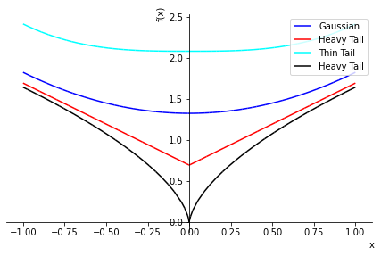
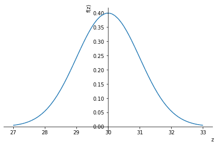

import sympy as sym
print (sym.__version__)1.8Understanding paper “Flexible Distributions as an Approach to Robustness : The Skew-t Case” by Adelchi Azzalini
When a continuous variable of interest spans the whole real line, an interesting distribution is the one with density function
\[ c_v \exp(- \frac{|x|^{v}}{v}), \qquad x \in \mathbb{R} \]
where $ V > 0 $ and
\[ C_v = \frac{1}{ 2 v^{1/v} \Gamma(1 + \frac{1}{v})}\]
Here the parameter \(v\) manoeuvres the tail weight in the sense that 1. \(v\) = 2 corresponds to the normal distribution, 2. \(0 < v < 2\) produces tails heavier than the normal ones, 3. $ v > 2 $ produces lighter tails.
import sympy as sym
print (sym.__version__)1.8v = sym.Symbol('v')
x = sym.Symbol('x')
gamma_v = sym.gamma(v + 1/v)
c_v = 1 / (2 * v**(1/v) * gamma_v)
skew_t = c_v * sym.exp(-sym.Abs(x)**v/ v)p1 = sym.plot(skew_t.subs(v, 2), label="Gaussian", line_color='blue', show=False, legend=True)
p2 = sym.plot(skew_t.subs(v, 1), label="Heavy Tail", line_color='red', show=False)
p3 = sym.plot(skew_t.subs(v, 3), label="Thin Tail", line_color='cyan', show=False)
p4 = sym.plot(skew_t.subs(v, 0.5), label="Heavy Tail", line_color='black', show=False)
p1.append(p2[0])
p1.append(p3[0])
p1.append(p4[0])
p1.show()
p1 = sym.plot(-sym.log(skew_t.subs(v, 2)), (x, -1, 1), label="Gaussian", line_color='blue', show=False, legend=True)
p2 = sym.plot(-sym.log(skew_t.subs(v, 1)), (x, -1, 1), label="Heavy Tail", line_color='red', show=False, legend=True)
p3 = sym.plot(-sym.log(skew_t.subs(v, 3)), (x, -1, 1), label="Thin Tail", line_color='cyan', show=False, legend=True)
p4 = sym.plot(-sym.log(skew_t.subs(v, 0.6)), (x, -1, 1), label="Heavy Tail", line_color='black', show=False)
p1.append(p2[0])
p1.append(p3[0])
p1.append(p4[0])
p1.show()
[Analyzing distribution with Sympy] (https://brianzhang01.github.io/2018/04/distributions-with-sympy/)
sym.init_printing()
x, t = sym.symbols('x t', real=True)
def area(dist):
return sym.simplify(sym.integrate(dist, (x, -sym.oo, sym.oo)))
def mean(dist):
return area(dist*x)
def EX2(dist):
return area(dist*x**2)
def variance(dist):
return sym.simplify(EX2(dist) - mean(dist)**2)
def mgf(dist):
return sym.simplify(area(dist*sym.exp(x*t)))
def latex(result):
return "$" + sym.latex(result) + "$\n"
def summarize(dist):
#print ("Distribution: " + latex(dist))
(dist)
print ("Area: " + latex(area(dist)))
print ("Mean: " + latex(mean(dist)))
print ("Variance: " + latex(variance(dist)))
print ("MGF: " + latex(mgf(dist)))
summarise = summarize # alias# Define other symbols that show up
mu = sym.symbols('mu', real=True)
sigma, a, b, lamb, nu = sym.symbols('sigma a b lambda nu', positive=True)# Normal Distribution
normal = (2*sym.pi*sigma**2) ** sym.Rational(-1, 2) * sym.exp(-(x-mu)**2/(2*sigma**2))
summarize(normal)
sym.pprint(normal)Area: $1$
Mean: $\mu$
Variance: $\sigma^{2}$
MGF: $e^{\frac{t \left(2 \mu + \sigma^{2} t\right)}{2}}$
2
-(-μ + x)
───────────
2
2⋅σ
√2⋅ℯ
───────────────
2⋅√π⋅σ sym.pprint (sym.latex(mu))\mu sym.pprint(skew_t.subs(v, 2)) 2
-│x│
──────
2
√2⋅ℯ
──────────
3⋅√π from sympy.stats import *
z = sym.Symbol('z')
v = Normal('v', 30, 1)
pdf = density(v)
sym.plot(pdf(z), (z, 27, 33))
sym.pprint(pdf(z)) 2
-(z - 30)
───────────
2
√2⋅ℯ
───────────────
2⋅√π gamma_v = sym.gamma(v + 1/v)
print (gamma_v)gamma(v + 1/v)gamma_v.subs(v,2)\(\displaystyle \frac{3 \sqrt{\pi}}{4}\)